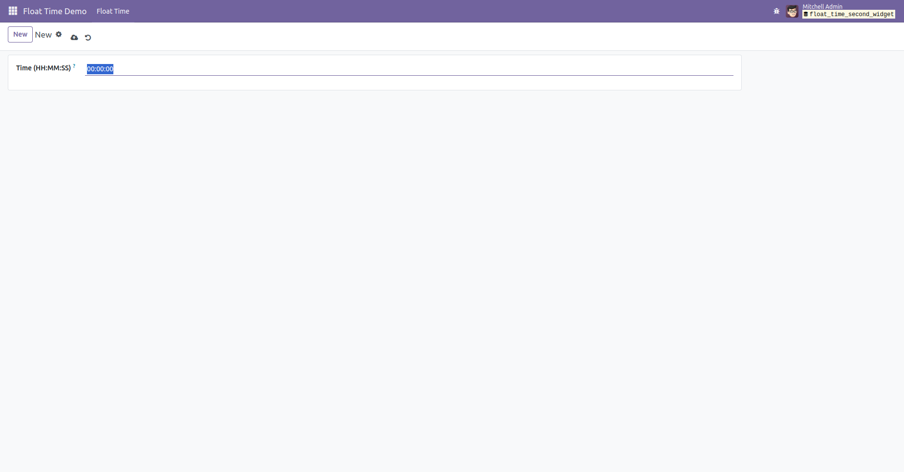

The Float Time Second Widget is a custom field widget for Odoo that allows
users to input and display float time values in HH:MM:SS format. It is designed
to enhance precision in time tracking, useful in attendance, timesheet, or time-based billing applications.
float_time_second.addons directory.To use the widget, simply apply it to any float field in your XML view like this:
<field name="duration" widget="float_time_second"/>🖼️ Example of the widget in action:

For support, customization, or contributions, feel free to reach out via email: dk.odootech@gmail.com